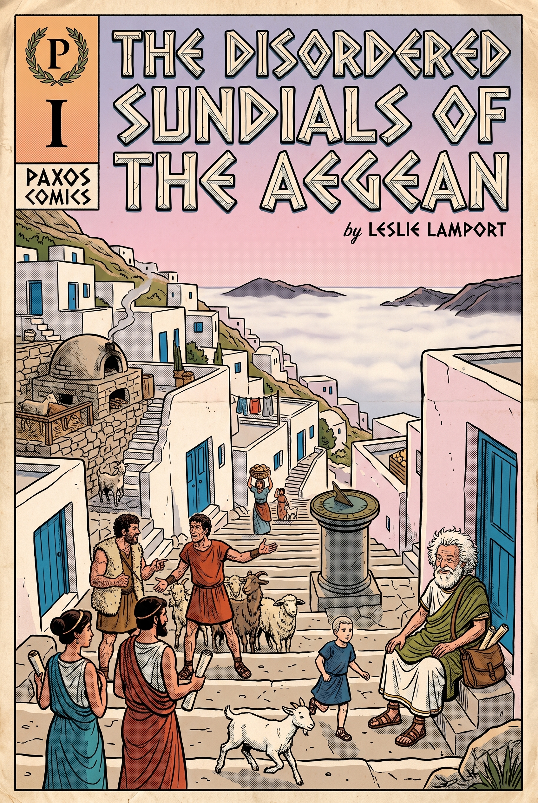
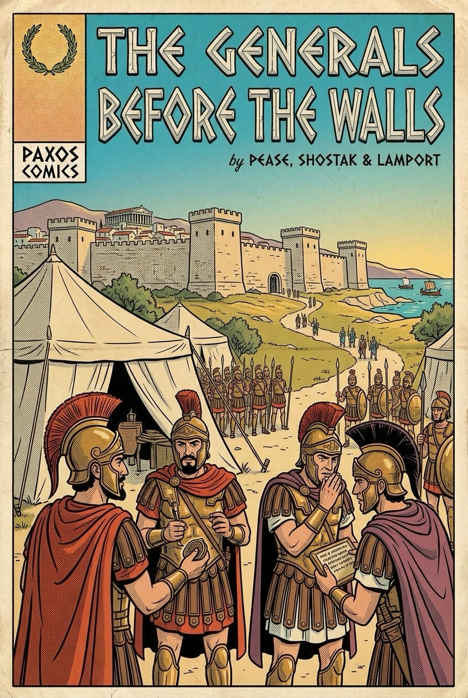
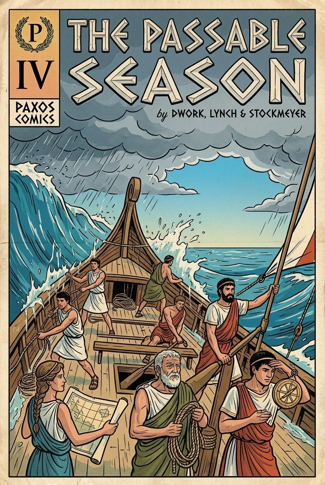
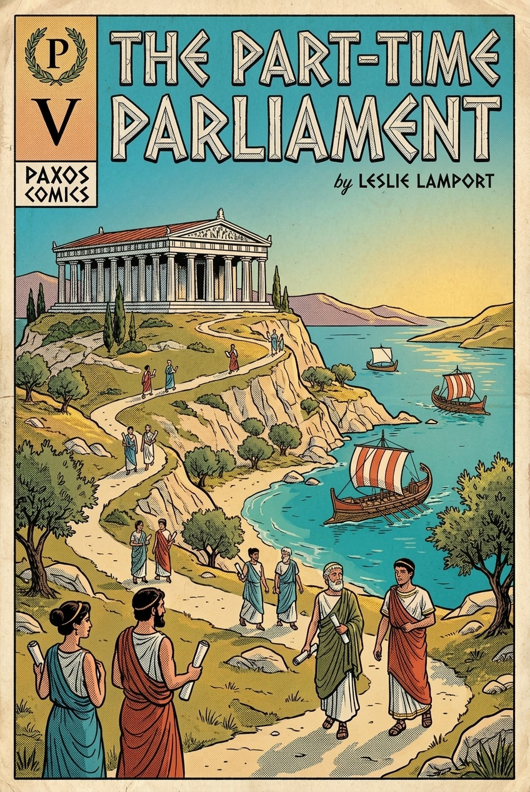
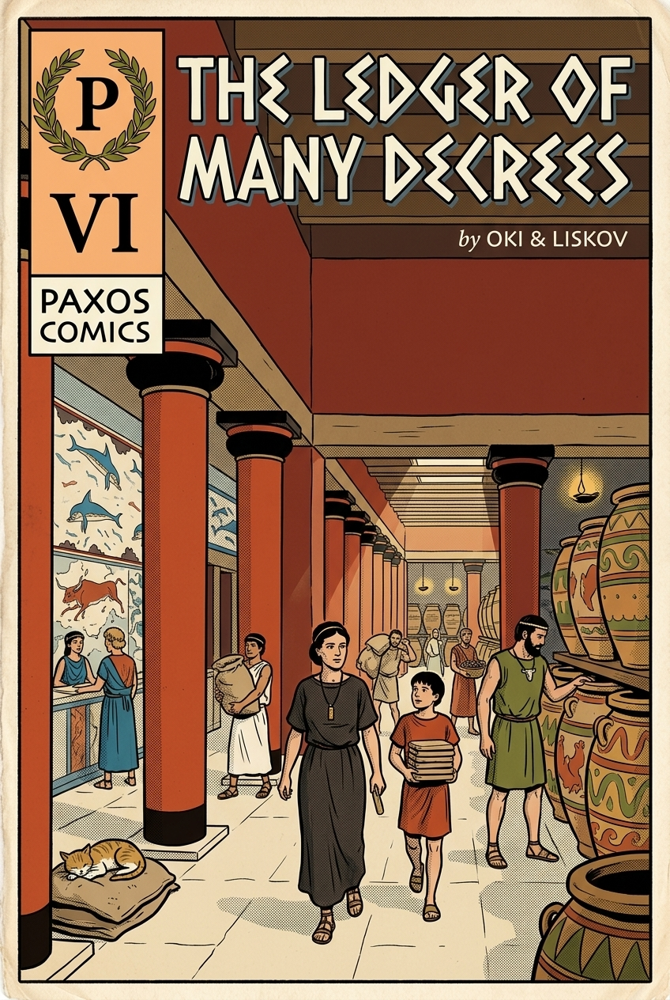
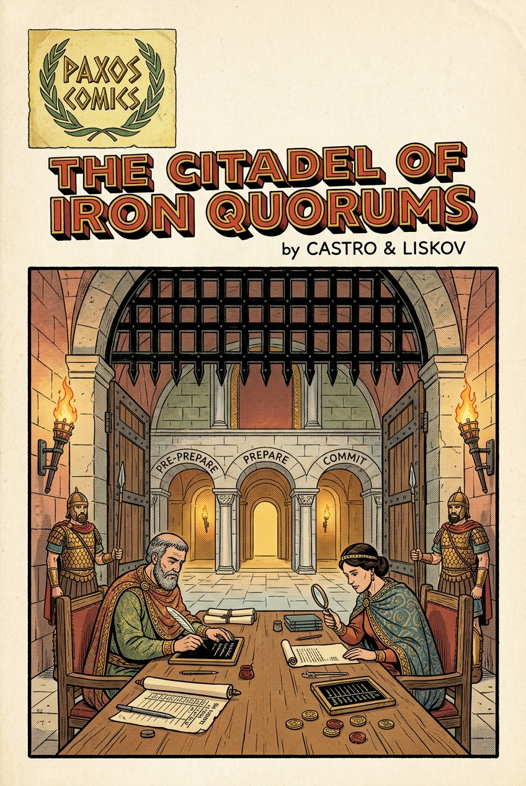
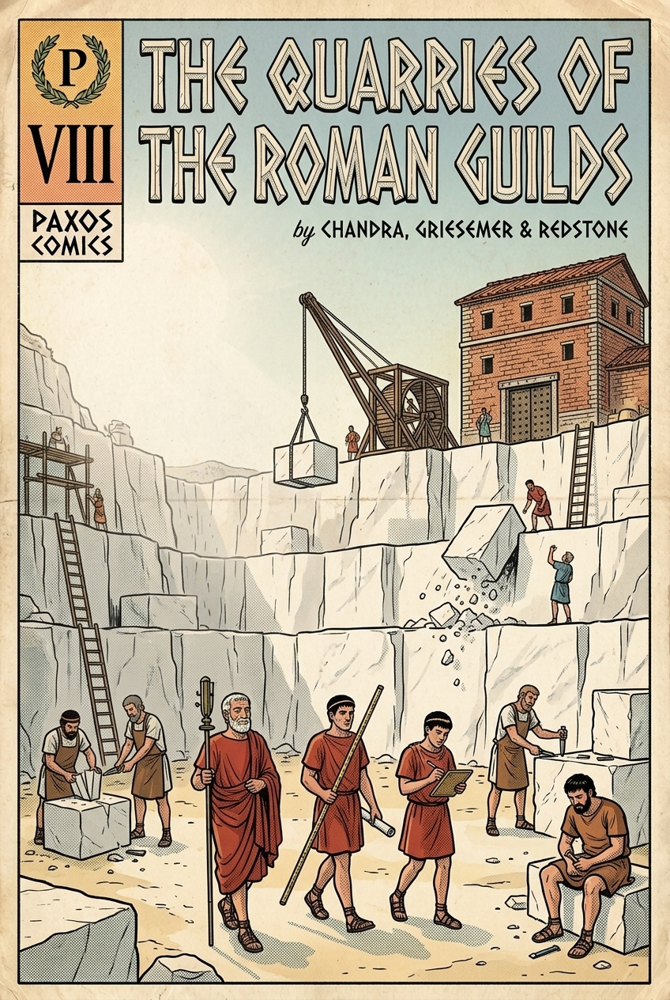
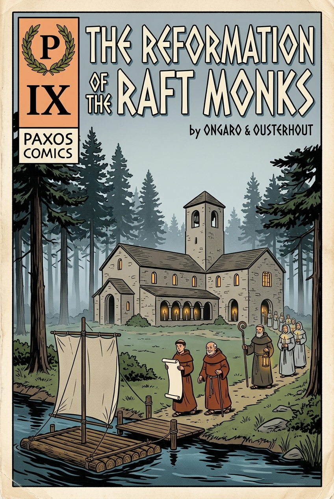

Distributed Algorithms
of Ancient Greece
Nine volumes, in the corrected recension
From the temporal anarchy of the Aegean sundials to the unshakeable vows of the Raft monastery: nine foundational milestones in distributed consensus, allegorized as ancient Greek chronicles.
Every volume is now written out in full — retold from the original papers in the manner of Lamport’s Part-Time Parliament, with the theorems, protocols and measurements intact. Volume V is fully illustrated; the panels of the other eight are still being painted.

The Disordered Sundials of the Aegean
Lamport (1978); Fidge & Mattern (1988)

The Generals Before the Walls
Pease, Shostak & Lamport (1980, 1982)

The Curse of the Sleeping Shepherd
Fischer, Lynch & Paterson (1985)

The Passable Season
Dwork, Lynch & Stockmeyer (1988)

The Synod of the Part-Time Parliament
Lamport (1998, 2001)

The Ledger of Many Decrees
Oki & Liskov (1988); Multi-Paxos

The Citadel of Iron Quorums
Castro & Liskov (1999)

The Quarries of the Roman Guilds
Chandra, Griesemer & Redstone (2007)

The Reformation of the Raft Monks
Ongaro & Ousterhout (2014)
Editor’s Note on the Earlier Recension
Four passages in the previous edition inverted the very thing their volume existed to teach, and are corrected in this recension:
| Volume | The Error in Previous Edition | Why It Mattered |
|---|---|---|
| Vol. I | Claimed the abacus proves which event truly happened first. | It proves ancestry only. Concurrent events are unordered, and the shepherds’ original feud is the one case logical clocks cannot settle. |
| Vol. V | “Propose the old decree” when several oaths return. | The rule is the highest-numbered oath. Any other choice is a safety violation, and this single clause is most of why Paxos is hard. |
| Vol. VII | Credited 3f+1 to the inquisitors, and had them exchanging signatures with everyone. |
The bound is Volume II’s, five hundred years older. The inquisitors’ contribution was removing those signatures from the common path. |
| Vol. IX | “Followers never debate; they blindly transcribe.” | Backwards. The follower’s refusal on a mismatched preceding line is what enforces log agreement. |
Two volumes were added where the chronology had a hole. Volume II gives
3f+1its true authors, without whom Volume VII appears to invent it. Volume IV supplies the escape from the Delphic Curse; without it, Volume V appears to have defeated an impossibility proof rather than negotiated around it.Volume VI was added because the reformation of Volume IX attacks freedoms — a standing consul, gaps in the ledger — that no earlier volume had introduced. It also restores the granary clerk of 1988 to his place in the lineage, which is awkward but necessary: one of the inquisitors of Volume VII had already drafted a primary-based constitution a decade earlier, and it is the closer ancestor of the monastery than Paxos is.